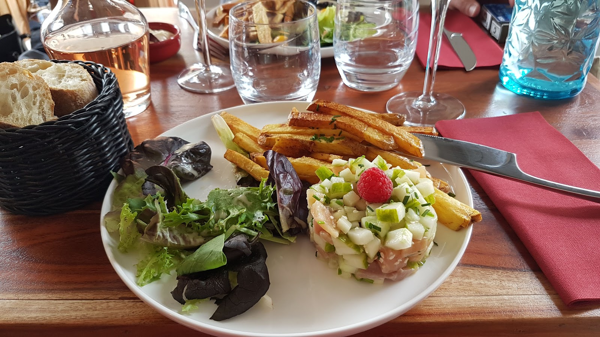
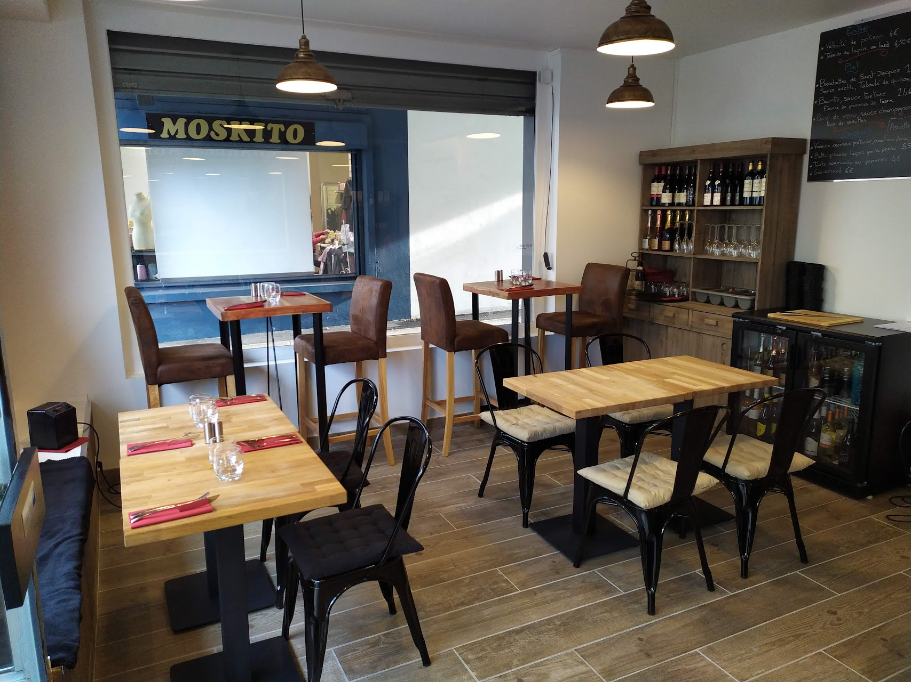
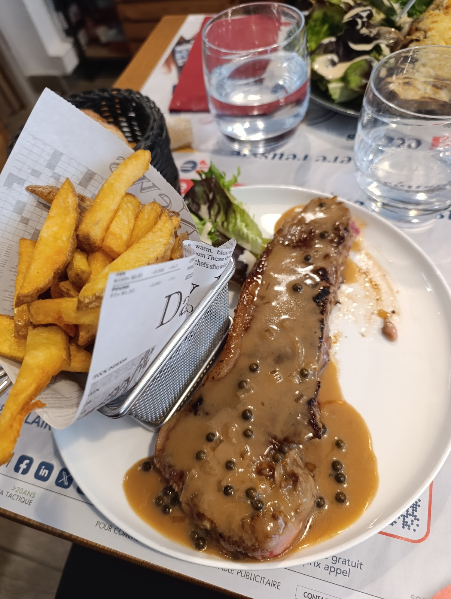
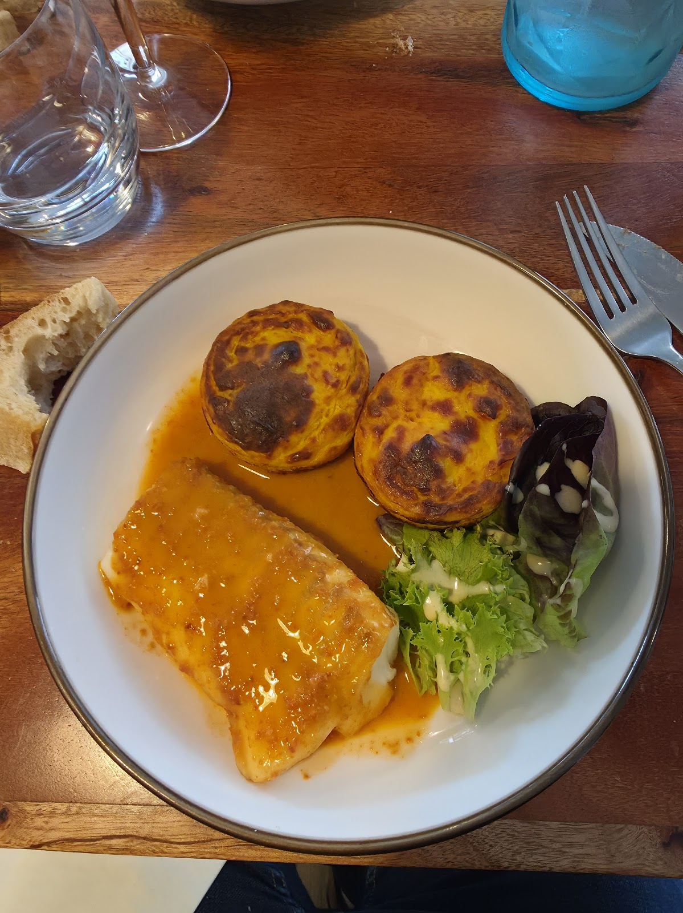
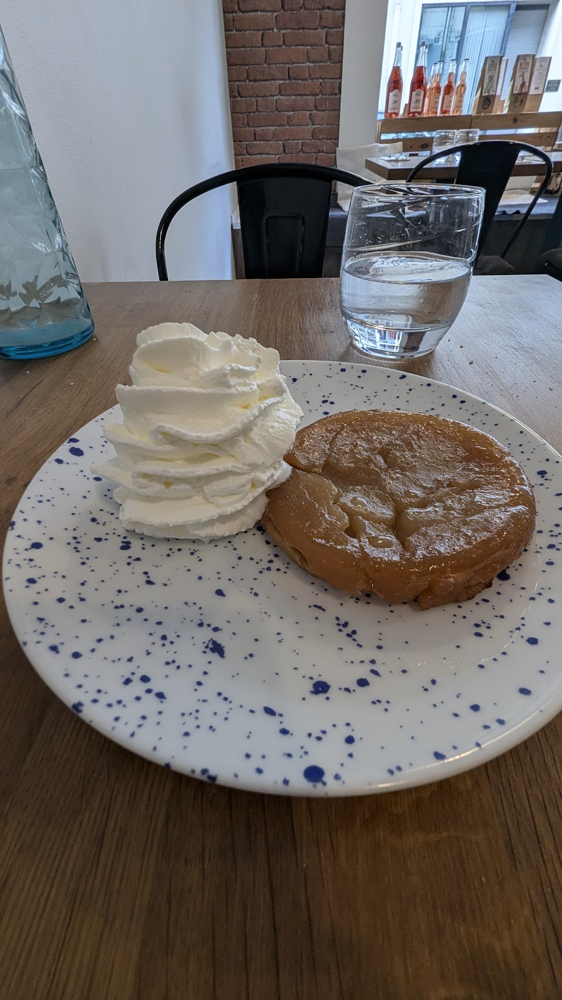

Restaurant · Cuisine maison · Compiègne
Une cuisine française sincère, des produits frais et de saison,
au cœur de Compiègne.

La maison
Au cœur de Compiègne, La Table Gourmande cultive une idée simple : une cuisine française généreuse, préparée chaque jour à partir de produits frais, locaux et de saison.
Les assiettes s'inspirent du terroir picard et des classiques de la gastronomie française, dans un cadre convivial et soigné. Un déjeuner entre collègues, un repas en famille ou un moment à deux : on s'y sent comme à la maison.
À table
Une carte courte qui change au fil des saisons. Voici quelques-unes de nos signatures. Comptez environ 20 à 30 € par personne.
Formule déjeuner du midi : entrée + plat + dessert. Menu mis à jour selon le marché — n'hésitez pas à nous appeler pour le menu du jour.
Appeler le restaurantEn images




Ils nous ont aimés
★★★★★« Très bien reçus, la cuisine est délicieuse — mention spéciale au gâteau picard façon pain perdu, excellent ! »
★★★★★« Cadre agréable, cuisine faite maison et très bons plats. Une carte simple et efficace. »
★★★★★« Service rapide et souriant. Un très bon repas, on reviendra ! »
Pratique
| Lundi | Fermé |
| Mardi | 12h00 – 14h00 |
| Mercredi | 12h00 – 14h00 |
| Jeudi | 12h00 – 14h00 |
| Vendredi | 12h00 – 14h00 |
| Samedi | 12h00 – 14h30 · 19h00 – 21h30 |
| Dimanche | Fermé |
Les horaires peuvent varier selon les jours fériés — appelez-nous pour confirmer.
11 Rue du Général Leclerc, 60200 Compiègne
Téléphone : 03 44 37 08 28
Service sur place & à emporter
Réserver
Remplissez le formulaire ci-dessous : votre demande nous est envoyée directement. Pour une réservation immédiate, appelez le 03 44 37 08 28.